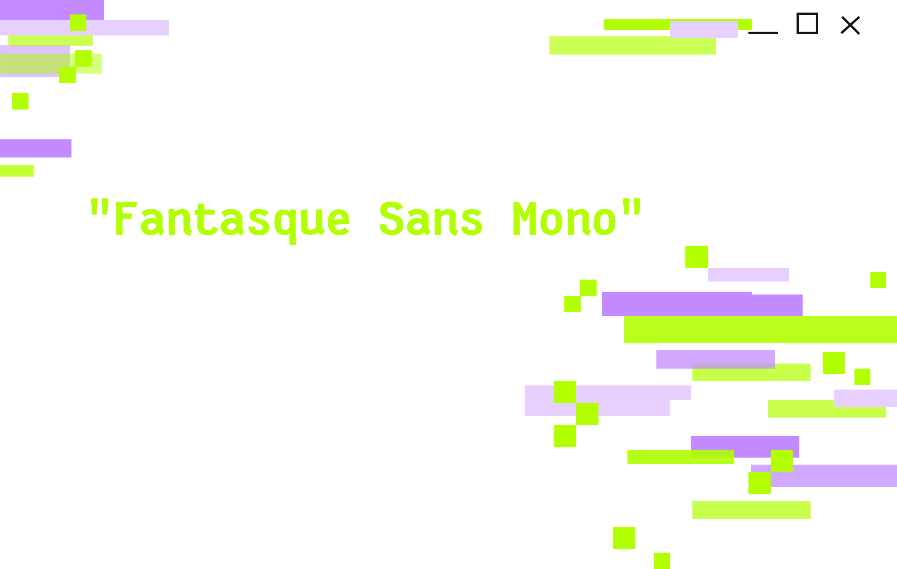
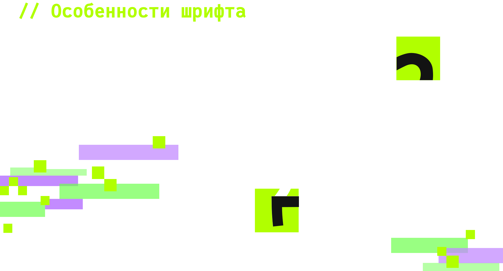
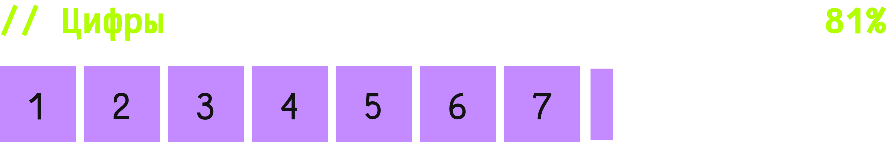
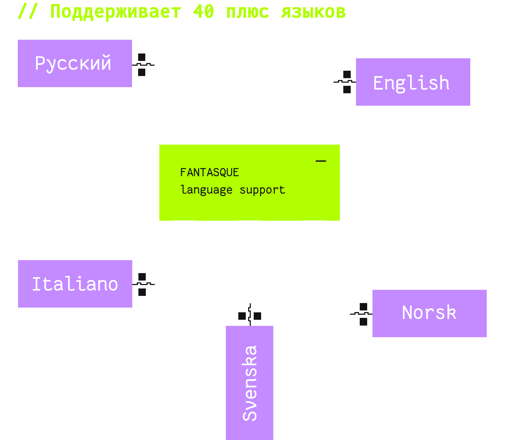

Fantasque Sans Mono — моноширинный
шрифт для программирования, сочетающий
точность машинной типографики
и характер рукописного текста.
Он был создан в 2013 году французским
дизайнером и разработчиком Jany Belluz.





